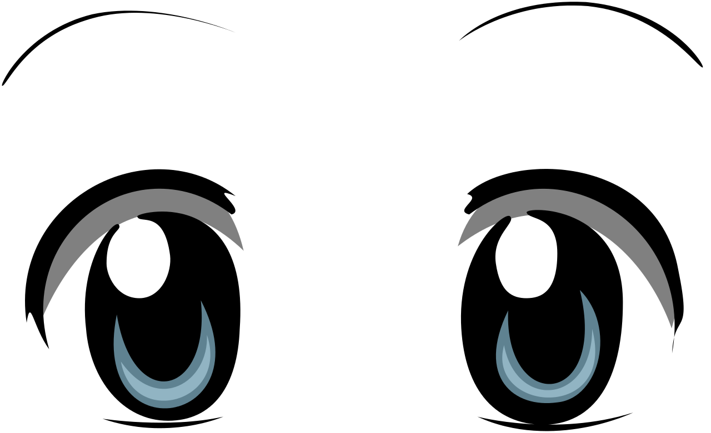

Project 1
PVC Won't Last

Are we the sum of our clicks and searches?
Are we in control?
Are we the archivists or are we the archived?
Are we engaged in a cruel struggle for survival in the digital wilderness?
Uriah Gray
Text, Leila Christine Nadir.
Hunting + Gathering in the Digital Wilderness
2012